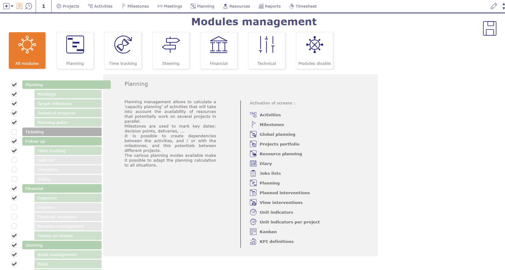
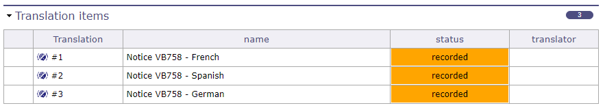
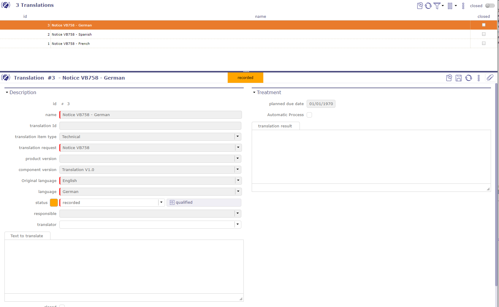
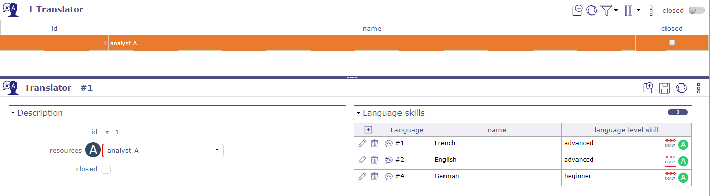

Traduction¶
Les traductions sont un module séparé. En l’activant, vous avez accès à une série d’écrans vous permettant de gérer vos demandes de traduction.
Voir aussi
Demande de traduction¶
Vous devez activer la gestion de la configuration pour gérer les produits, les versions de produits et les composants de version.
Lorsque vous faites une demande de traduction, les champs « composant de version » et « version de produit » sont obligatoires.

Écran de gestion des modules¶
Traduction¶
Lorsque vous effectuez une demande de traduction, une ligne de traduction est créée pour chaque langue associée à la version du produit ou du composant.

Éléments de traduction¶
Chacune de ces lignes est affichée sur l’écran de traduction.

Éléments de traduction¶
Vous trouverez les informations saisies dans l’écran des demandes de traduction. Ces champs sont grisés et ne peuvent être modifiés que sur l’écran de demande.
Le seul champ disponible est celui des traducteurs.
La liste des traducteurs est proposée selon les compétences indiquées sur les traducteurs et les langues demandées lors de la demande.
Si le texte à traduire est d’origine allemande et que les langues de destination sont l’anglais et l’espagnol, le traducteur doit connaître ces trois langues pour apparaître dans les listes.
Si aucun traducteur n’apparaît dans les listes, cela signifie que vous n’avez pas les traducteurs compétents pour cette traduction.
Traducteurs¶
Vous enregistrez vos traducteurs à partir de vos ressources.

Écran des traducteurs¶
Chaque traducteur peut avoir une ou plusieurs langues associées.
Chaque langue a un niveau de compétence.
Niveau de compétence linguistique¶
Vous définissez les niveaux de compétence sur cet écran.
Les niveaux sont personnalisables et vous pouvez en créer autant que vous le souhaitez.
Par défaut, ProjeQtOr vous propose les 3 niveaux les plus basiques : débutant, intermédiaire et avancé.
Ces niveaux de compétence vous sont demandés lors de la création de vos Traducteurs.
Types de demandes et d’éléments de traduction¶
Vous définissez les types de traduction que vous utiliserez dans votre activité.
Cela vous permet d’appliquer un workflow et un comportement différents pour chaque type.
Pour chaque type, vous pouvez appliquer des automatismes.
Les lignes de traduction ont également la possibilité d’être typées.
Vous pouvez plus facilement compartimenter vos demandes.
Voir aussi